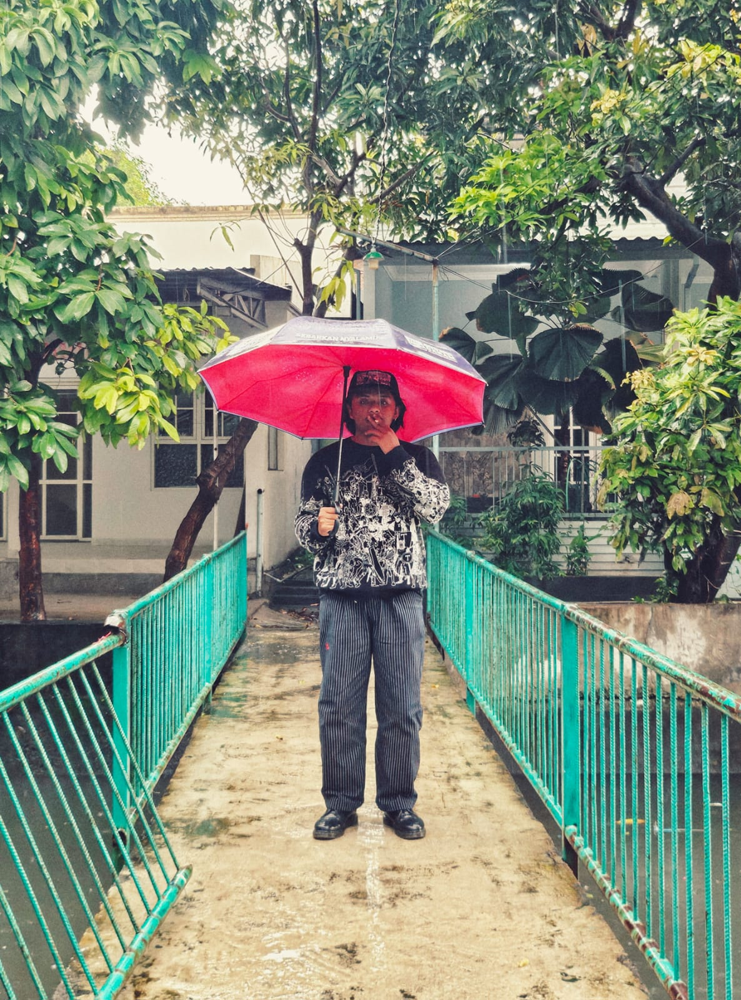

Abdul Hakim Nur
Position: Mahasiswa
Email: Kimdeadcartney@Gmail.com
Phone: +62 8560-8969-926
Address: Lamongan
About Me
Saya adalah seorang mahasiswa Teknik Informatika yang memiliki passion dalam seni ilustrasi dan teknologi. Dengan latar belakang sebagai ilustrator dan pengalaman dalam pengembangan web sederhana, saya selalu mencari cara untuk menggabungkan kreativitas dan teknologi dalam setiap proyek yang saya kerjakan. Tujuan saya adalah menciptakan solusi yang inovatif dan memberikan dampak positif bagi komunitas.
Keahlian
- Ilustrator dan Desainer Kreatif: Menghasilkan karya visual untuk komunitas online, meningkatkan engagement komunitas dengan visual yang menarik.
- HTML, CSS: Mengembangkan situs web portofolio untuk menampilkan karya ilustrasi dan mendukung proyek digital lainnya.
- Perakitan dan Optimasi PC: Membantu komunitas lokal dalam merakit dan mengoptimalkan komputer untuk kebutuhan spesifik mereka, termasuk gaming dan desain grafis.
Pendidikan
- SMA 3 Lamongan - IPS (2019 - 2022): Mengembangkan keterampilan analitis dan kreatif yang mendukung saya dalam proyek desain dan teknologi.
- UNIVERSITAS 17 AGUSTUS 1945 SURABAYA - Teknik Informatika (2022 - Sekarang): Fokus pada pengembangan perangkat lunak dan penggabungan seni ilustrasi dalam dunia teknologi.
Pengalaman Kerja
-
Ilustrator - Dc Server Gang Sebelah (2020 - Sekarang):
- Tantangan: Membuat ilustrasi yang orisinal untuk komunitas online.
- Tindakan: Menghasilkan karya dengan perangkat lunak seperti Procreate dan berkolaborasi dengan anggota komunitas untuk memahami kebutuhan mereka.
- Hasil: Karya saya diterima dengan baik dan membantu meningkatkan jumlah anggota komunitas sebesar 20%.